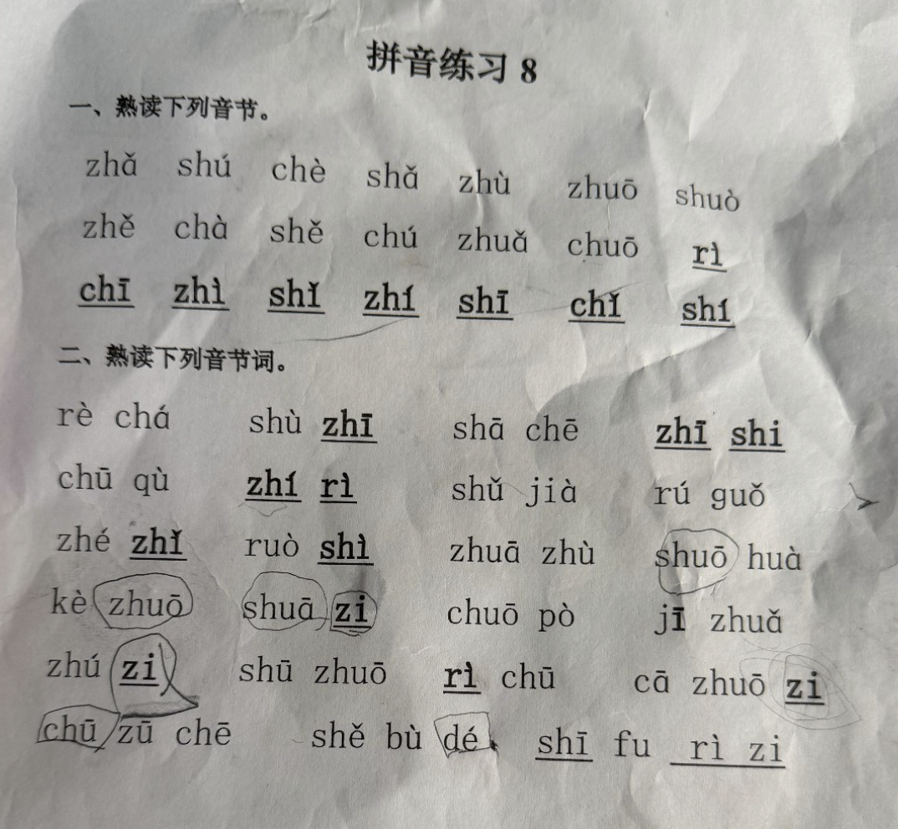

先听一听，再拼一拼。今天也和小老师一起读吧！
拍照变练习家长确认，孩子放心学
听读再拼读声母、韵母，一步步来
跟着读一读听听自己的声音
不听示范、不看汉字或拆分提示，先逐字读，再把词语连起来读。家长听完后勾选；这是家长检查，不是自动语音评分。每项等权计分，完成项 ÷ 总项 × 100；未听孩子独立读时不评分。
建议隔天换个顺序、不听提示再读对一次，再判断是否比较熟练。听过或跟读一次，不计为会读。
DeepSeek 识别后请核对声调和对应字。每行一个字或词，可写“shù zhī | 树枝”，也可只输入“树枝”自动加拼音。原图只有拼音时，汉字是配套示例。

也支持数字声调，如 zha3、shu4 zhi1。无声调按轻声处理，请特别检查。
DeepSeek Key 只保存在本机，网站不存储你的 Key。GitHub Pages 版由浏览器直接连接 DeepSeek，密钥不经过本站后端。
示例音节优先使用真人录音；词语及未收录音节使用设备中文语音，质量随设备而异。真人录音速度保持原速，滑块仅调整设备语音。
照片会发送给 DeepSeek 进行识别，本网站不保存照片。录音仅在本机回放。家长确认后的练习文字、汉字和收藏保存在这台设备。API 密钥由你选择保存在当前浏览器或仅本次使用。GitHub Pages 版由浏览器直接调用 DeepSeek，密钥不经过本站后端。
音节录音：Chen Wang，audio-cmn；整理：Hugo Lopez / PLIDAM, INALCO。来源与 CC BY-SA 许可 · 依赖与音频说明
ch、chī 与“吃”的发音对照及来源
填写你自己的 API 密钥，识别费用从你的 DeepSeek 账户扣除。普通点读和奖励特效无需密钥。
不勾选则仅本次页面使用。换设备或清除网站数据后需重填。识别时，密钥与照片由当前浏览器直接发送给 DeepSeek 官方接口，不经过本站后端。本地保存不是加密保险箱，共用设备建议不勾选。
API 余额用于接口调用，与聊天网页的使用分开。我们不代售密钥，也不收取充值款。